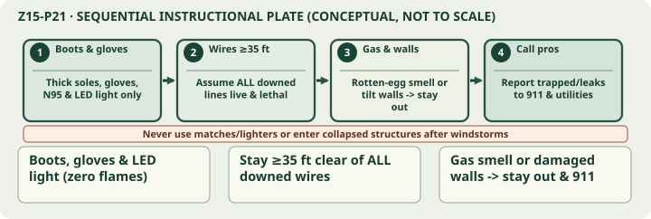

Z15-P21 · Disaster scenarios · New manuscript
Navigate post-tornado and derecho debris safely without secondary injuries
Prevent electrocution, gas explosions, puncture wounds, and structural collapses during the dangerous hours immediately after windstorms.
When it applies · Exiting shelters and inspecting damaged neighborhoods after tornadoes, derechos, or severe windstorms.
Equipment · Sturdy thick-soled boots, heavy work gloves, N95 mask, flashlight (no open flames), and phone for 911/utility reporting.

Actions
- Wait until official storm warnings clear before leaving shelter, put on sturdy thick-soled boots and heavy work gloves immediately, and watch every step for shattered glass, upturned nails, splintered lumber, and unstable leaning walls or hanging "widowmaker" tree limbs overhead.[D03, D04, E13]
- Assume EVERY downed or tangled utility wire is ENERGIZED AND LETHAL (stay ≥35+ feet back; never touch wet metal fences, aluminum siding, or tree limbs touching wires), and evacuate immediately if you smell rotten-egg natural gas or hear hissing pipes—using flashlights ONLY, never matches or lighters.[D04, U11, D03]
- Do NOT enter heavily damaged buildings or crawl into collapsed debris looking for belongings—account for household members/neighbors verbally from safe ground and leave structural search-and-rescue to trained fire/USAR teams.[D03, T01]
Failure recognition · Walking barefoot out of a basement in the dark with a cigarette lighter after a tornado when a broken gas line is hissing beside a downed power wire.[D03, U11, D04]
Verify · Confirm boots/gloves worn, flashlights only (zero open flames), ≥35 ft clear of downed wires, and damaged buildings left to responders.[D03, D04, U11]
Stop or change course · Any gas odor, sizzling/sparking wire, creaking unstable wall, or bleeding injury halts cleanup immediately in favor of retreat and 911.[D03, U11, M01]
Evidence and editorial notes
- D03 · National Weather Service · Tornado Safety: During a Tornado (Current web edition)
- Section: During a Tornado: at home, outside or in a vehicle · Conditions: Tornado warning; options depend on location and flood danger
Support: Use a sturdy building’s lowest suitable interior area when possible. Mobile homes and overpasses are unsafe. Follow the vehicle or outdoor last-resort branch if sturdy shelter cannot be reached.
Limitations: A low outside spot is conditional on safe access and absence of flood danger. Follow local alerts. · Conflicting evidence: See A02 claim audit for boundaries.
Editorial note: Core tornado shelter-selection and post-storm hazard evidence in Z15. · Specialist reviewer: Meteorology and emergency management
Primary source · checked 2026-11-25 - D04 · FEMA / Ready.gov · Thunderstorms and Lightning (current web edition)
- Section: Severe Thunderstorms, Straight-Line Winds, Hail, and Lightning · Conditions: Severe Thunderstorm Warnings, derechos, and electrical storms
Support: Move indoors to a substantial building immediately when thunder is heard or severe wind warnings issue; stay away from windows, corded appliances, and plumbing during lightning, and avoid downed limbs and energized downed lines after derechos.
Limitations: Straight-line derecho winds can rival tornado damage across hundreds of miles and cause multi-day regional power blackouts. · Conflicting evidence: None; integrates with E07 and E18.
Editorial note: Grounds severe-storm, hail, and straight-line wind response cards. · Specialist reviewer: Meteorology and utility safety
Primary source · checked 2026-11-24 - E13 · USDA Forest Service · Hazard Tree Safety (agency PDF)
- Section: What You Can Do to Reduce Risk · Conditions: Forest campsites and stops
Support: Look for dead trees and falling material. Stay away from hazardous trees and move away when winds make the site unsafe.
Limitations: Internal decay and root rot can cause live-looking trees to fail in saturated soils or high wind. · Conflicting evidence: Does not specify a universal exclusion radius; tree height and slope govern fall reach.
Editorial note: Prevents false precision on fall-zone distance while requiring overhead screening. · Specialist reviewer: Land management and arboriculture safety
Primary source · checked 2026-11-24 - M01 · American College of Surgeons · STOP THE BLEED Training Course (current web edition)
- Section: Ensure Your Own Safety; Find Life-Threatening Bleeding; Compress · Conditions: Lay responder encountering severe external hemorrhage
Support: Ensure scene safety first, call 911, expose the wound to locate life-threatening bleeding, and apply firm continuous direct pressure with clean gauze or cloth.
Limitations: Does not replace formal hands-on Stop the Bleed training or EMS trauma care. · Conflicting evidence: None across ACS/ARC guidelines.
Editorial note: Separates life-threatening arterial/venous hemorrhage from minor scrapes. · Specialist reviewer: Wilderness medicine and trauma EMS
Primary source · checked 2026-11-24 - T01 · American Red Cross · First Aid Steps (current web edition)
- Section: First Aid Steps > Check the scene; check the person · Conditions: Lay responder in United States; assess safety before contact
Support: Check scene safety, responsiveness, breathing and immediately life-threatening conditions.
Limitations: Lay guidance does not replace advanced clinical or rescue protocols. · Conflicting evidence: None; universal first-response opening gate.
Editorial note: Anchors scene-safety-first rule across Z01. · Specialist reviewer: EMS and wilderness medicine
Primary source · checked 2026-11-24 - U11 · U.S. DOT PHMSA · Pipeline Leak Recognition and What to Do (Current web edition)
- Section: What to DO; What Not to Do · Conditions: Suspected gas or pipeline leak
Support: Leave the affected area and call 911 and the provider from safety. Avoid spark sources and leave valve and restoration decisions to authorized responders.
Limitations: Do not transpose outdoor hazmat sheltering directions to a gas leak inside the dwelling. · Conflicting evidence: See A02 claim audit for boundaries.
Editorial note: Establishes strict utility-leak evacuation and licensed restoration gates. · Specialist reviewer: Gas utility safety and fire service
Primary source · checked 2026-11-25
Source lineage · FEMA Ready.gov Tornadoes and Thunderstorms; new manuscript · Classification · New manuscript.